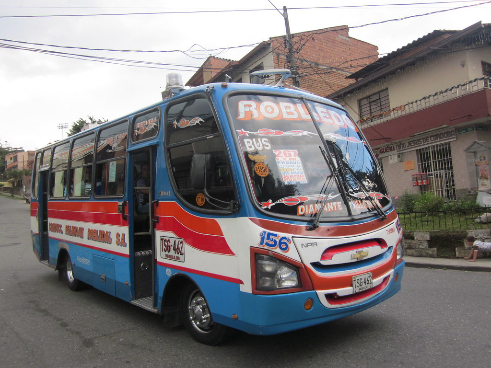

Ruta
ROBLEDO 267
I.T.M, P. Bravo, Carrefour, Exito de Colombia
El autobús 267 es una línea circular con 62 paradas, comenzando en Carrera 92, 90-21. Su horario de prestacion de servision es de lunes a sabado de 4:00 am a 21:30 pm y domingos de 4:00 am a 21:00 pm.
La primera parada de la línea 267 de autobús es Carrera 92, 90-21 en dirección al centro de la ciudad pasa por el exito de san Antonio y la última parada es Carrera 92, 90-21. está operativa los todos los días.
Tarifa
2.850$
Mapa de recorrido
Ver
